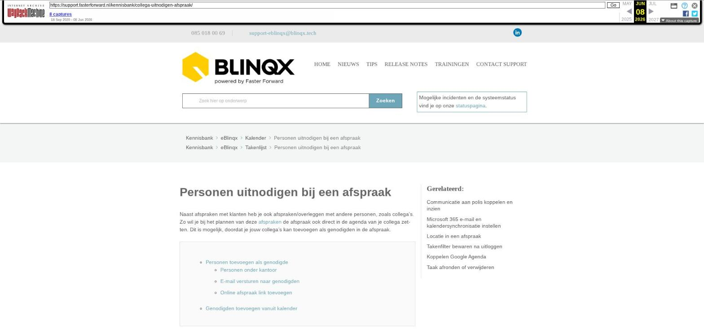

Personen uitnodigen bij een afspraak

Tekstinhoud
Personen uitnodigen bij een afspraak
[Let op: dit artikel staat zowel onder de subcategorie Kalender als onder de subcategorie Takenlijst van Basis; hieronder eenmalig opgenomen.]
Naast afspraken met klanten heb je ook afspraken/overleggen met andere personen, zoals collega's. Zo wil je bij het plannen van deze afspraken de afspraak ook direct in de agenda van je collega zetten. Dit is mogelijk, doordat je jouw collega's kan toevoegen als genodigden in de afspraak.
Personen toevoegen als genodigde
Personen onder kantoor
E-mail versturen naar genodigden
Online afspraak link toevoegen
Genodigden toevoegen vanuit kalender
Personen toevoegen als genodigde
Klik op de blauwe pijl achter 'Genodigden'.
Je krijgt vervolgens een scherm waarin je de genodigden kunt zoeken en selecteren. Linksboven zoek je binnen je gehele eBlinqxomgeving.
Linksonder zie je gelijk een lijst van de personen van je kantoor en/of het dossier.
Dubbel klik op de naam van degene die je wilt uitnodigen om deze aan de genodigden toe te voegen. Of je klikt deze personen aan en klikt daarna op 'Personen selecteren'. Klik vervolgens op de pijl omhoog om terug te gaan naar de afspraak. Hier ziet je vervolgens de genodigden erbij staan.
Personen onder kantoor
De personen van het kantoor zijn de personen die in Beheer – Organisatie en Personen gekoppeld zijn aan het kantoor die jij hebt geselecteerd in jouw kalenderinstellingen. Dit kan je controleren via het poppetje rechts bovenin – Mijn instellingen – Instellingen – Kalender. Staat bij jouw collega hier een ander kantoor dan bij jou dan zie je deze collega niet terug onder 'Personen van kantoor'.
E-mail versturen naar genodigden
Vanuit de aangemaakte afspraak kan je ook direct een e-mail sturen naar de genodigden. Wanneer je genodigden hebt toegevoegd komt er in het afsprakenscherm de optie 'E-mail verzenden' bij. Deze kan je aanvinken om een e-mail te versturen.
Als je nu de afspraak opslaat door middel van het opslaan dan kom je uit in het uitnodigenscherm. Hier kan je links aangeven vanuit welke e-mailbox en naar welk e-mailadres je de e-mail wilt verzenden. De keuze e-mailboxen zijn de e-mailboxen waartoe jij toegang hebt. Dit is in te stellen via de e-mailmanager. De keuze e-mailadressen zijn de e-mailadressen die aan de persoon gekoppeld zijn. Dit is in te stellen via Beheer – Organisaties & Personen. Let op: voor beiden moet je de juiste rechten hebben. Rechts kan je de tekst die je wilt versturen typen. Na opslaan wordt de e-mail daadwerkelijk verstuurd.
Indien je geen e-mail wilt verzenden dan vink je Email verzenden uit.
Online afspraak link toevoegen
Wanneer de verantwoordelijke persoon in de taak gebruik maakt van Outlook en de synchronisatie met zijn Microsoft 365 kalender (voorheen Office 365) staat ingesteld dan is het mogelijk om direct vanuit de afspraak een link voor de afspraak online te genereren. Bij het maken van de afspraak komt dan de optie 'Online afspraak link toevoegen' zichtbaar. Deze kan je aanvinken. Na opslaan komt de link te staan in het veld 'Omschrijving' en in het veld 'Locatie'. De link kan je kopiëren en plakken in de e-mail die je vanuit de afspraak verzendt naar de genodigden. Ook is de link op te halen door middel van de tag [taak->locatie]. Na het verzenden van de e-mail kan je, bij een online afspraak, niet meer de verantwoordelijke van de taak te wijzigen.
Genodigden toevoegen vanuit kalender
Ook is het mogelijk de personen die je in jouw kalender geselecteerd hebt, direct uit te nodigen voor een afspraak. Selecteer hiervoor eerst de personen die je wilt uitnodigen:
Maak vervolgens een afspraak aan in de kalender, door een tijdvak te selecteren. Het volgende scherm wordt nu geopend:
Klik hier op de blauwe knop 'Geselecteerde personen uitnodigen'. Alle personen uit de selectie staan nu in één keer bij genodigden.
Laatste update: 15 oktober 2025
Tagged: collega
Was deze informatie nuttig?
Ja Nee